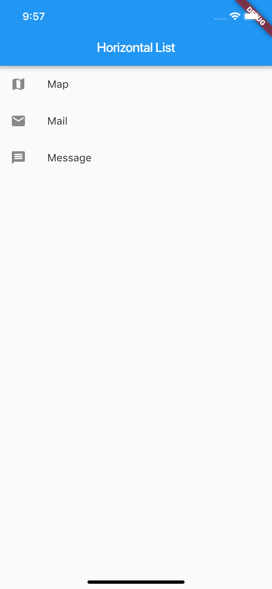
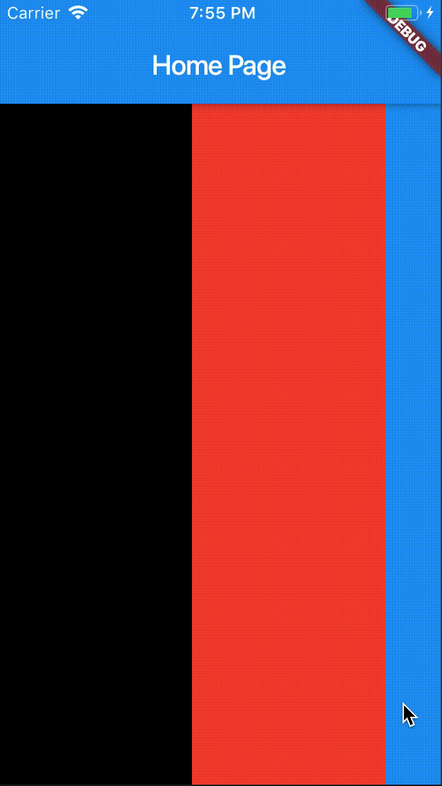
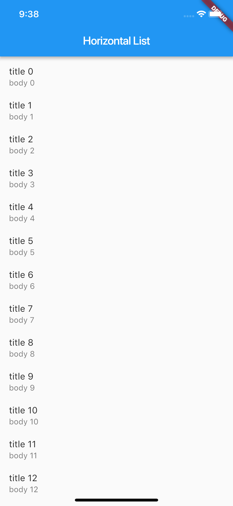
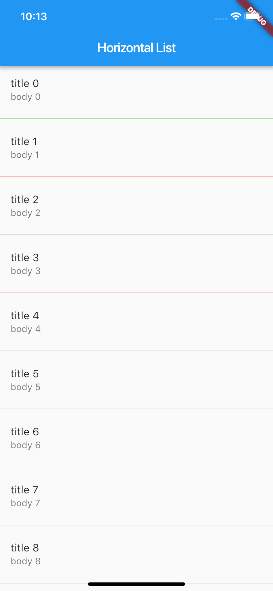
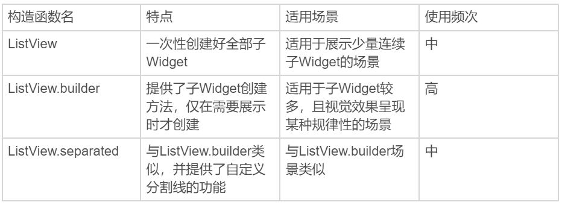
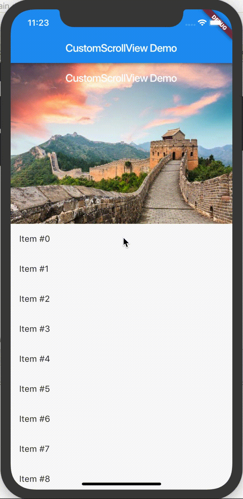
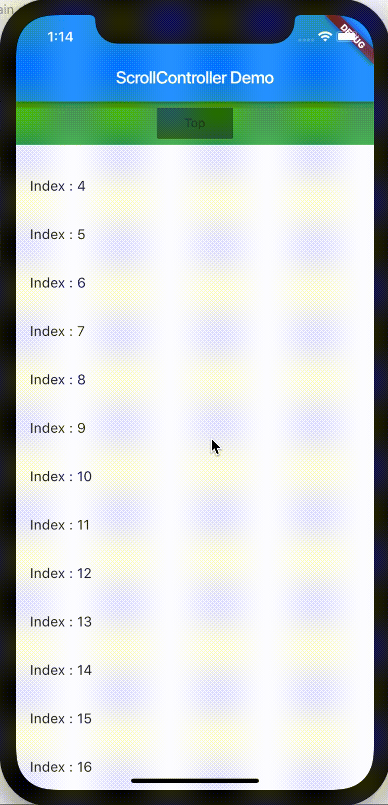

你好，我是陈航。
在上一篇文章中，我和你一起学习了文本、图片和按钮这 3 大经典组件在 Flutter 中的使用方法，以及如何在实际开发中根据不同的场景，去自定义展示样式。
文本、图片和按钮这些基本元素，需要进行排列组合，才能构成我们看到的 UI 视图。那么，当这些基本元素的排列布局超过屏幕显示尺寸（即超过一屏）时，我们就需要引入列表控件来展示视图的完整内容，并根据元素的多少进行自适应滚动展示。
这样的需求，在 Android 中是由 ListView 或 RecyclerView 实现的，在 iOS 中是用 UITableView 实现的；而在 Flutter 中，实现这种需求的则是列表控件 ListView。
ListView
在 Flutter 中，ListView 可以沿一个方向（垂直或水平方向）来排列其所有子 Widget，因此常被用于需要展示一组连续视图元素的场景，比如通信录、优惠券、商家列表等。
我们先来看看 ListView 怎么用。ListView 提供了一个默认构造函数 ListView，我们可以通过设置它的 children 参数，很方便地将所有的子 Widget 包含到 ListView 中。
不过，这种创建方式要求提前将所有子 Widget 一次性创建好，而不是等到它们真正在屏幕上需要显示时才创建，所以有一个很明显的缺点，就是性能不好。因此，这种方式仅适用于列表中含有少量元素的场景。
如下所示，我定义了一组列表项组件，并将它们放在了垂直滚动的 ListView 中：
ListView( children: <Widget>[ // 设置 ListTile 组件的标题与图标 ListTile(leading: Icon(Icons.map), title: Text('Map')), ListTile(leading: Icon(Icons.mail), title: Text('Mail')), ListTile(leading: Icon(Icons.message), title: Text('Message')), ]);备注：ListTile 是 Flutter 提供的用于快速构建列表项元素的一个小组件单元，用于 1~3 行（leading、title、subtitle）展示文本、图标等视图元素的场景，通常与 ListView 配合使用。
上面这段代码中用到 ListTile，是为了演示 ListView 的能力。关于 ListTile 的具体使用细节，并不是本篇文章的重点，如果你想深入了解的话，可以参考官方文档。
运行效果，如下图所示：

除了默认的垂直方向布局外，ListView 还可以通过设置 scrollDirection 参数支持水平方向布局。如下所示，我定义了一组不同颜色背景的组件，将它们的宽度设置为 140，并包在了水平布局的 ListView 中，让它们可以横向滚动：
ListView( scrollDirection: Axis.horizontal, itemExtent: 140, //item 延展尺寸 (宽度) children: <Widget>[ Container(color: Colors.black), Container(color: Colors.red), Container(color: Colors.blue), Container(color: Colors.green), Container(color: Colors.yellow), Container(color: Colors.orange), ]);运行效果，如下图所示：

在这个例子中，我们一次性创建了 6 个子 Widget。但从图 2 的运行效果可以看到，由于屏幕的宽高有限，同一时间用户只能看到 3 个 Widget。也就是说，是否一次性提前构建出所有要展示的子 Widget，与用户而言并没有什么视觉上的差异。
所以，考虑到创建子 Widget 产生的性能问题，更好的方法是抽象出创建子 Widget 的方法，交由 ListView 统一管理，在真正需要展示该子 Widget 时再去创建。
ListView 的另一个构造函数 ListView.builder，则适用于子 Widget 比较多的场景。这个构造函数有两个关键参数：
- itemBuilder，是列表项的创建方法。当列表滚动到相应位置时，ListView 会调用该方法创建对应的子 Widget。
- itemCount，表示列表项的数量，如果为空，则表示 ListView 为无限列表。
同样地，我通过一个案例，与你说明 itemBuilder 与 itemCount 这两个参数的具体用法。
我定义了一个拥有 100 个列表元素的 ListView，在列表项的创建方法中，分别将 index 的值设置为 ListTile 的标题与子标题。比如，第一行列表项会展示 title 0 body 0：
ListView.builder( itemCount: 100, // 元素个数 itemExtent: 50.0, // 列表项高度 itemBuilder: (BuildContext context, int index) => ListTile(title: Text("title $index"), subtitle: Text("body $index")));这里需要注意的是，itemExtent 并不是一个必填参数。但，对于定高的列表项元素，我强烈建议你提前设置好这个参数的值。
因为如果这个参数为 null，ListView 会动态地根据子 Widget 创建完成的结果，决定自身的视图高度，以及子 Widget 在 ListView 中的相对位置。在滚动发生变化而列表项又很多时，这样的计算就会非常频繁。
但如果提前设置好 itemExtent，ListView 则可以提前计算好每一个列表项元素的相对位置，以及自身的视图高度，省去了无谓的计算。
因此，在 ListView 中，指定 itemExtent 比让子 Widget 自己决定自身高度会更高效。
运行这个示例，效果如下所示：

可能你已经发现了，我们的列表还缺少分割线。在 ListView 中，有两种方式支持分割线：
- 一种是，在 itemBuilder 中，根据 index 的值动态创建分割线，也就是将分割线视为列表项的一部分；
- 另一种是，使用 ListView 的另一个构造方法 ListView.separated，单独设置分割线的样式。
第一种方式实际上是视图的组合，之前的分享中我们已经多次提及，对你来说应该已经比较熟悉了，这里我就不再过多地介绍了。接下来，我和你演示一下如何使用 ListView.separated 设置分割线。
与 ListView.builder 抽离出了子 Widget 的构建方法类似，ListView.separated 抽离出了分割线的创建方法 separatorBuilder，以便根据 index 设置不同样式的分割线。
如下所示，我针对 index 为偶数的场景，创建了绿色的分割线，而针对 index 为奇数的场景，创建了红色的分割线：
// 使用 ListView.separated 设置分割线ListView.separated( itemCount: 100, separatorBuilder: (BuildContext context, int index) => index %2 ==0? Divider(color: Colors.green) : Divider(color: Colors.red),//index 为偶数，创建绿色分割线；index 为奇数，则创建红色分割线 itemBuilder: (BuildContext context, int index) => ListTile(title: Text("title $index"), subtitle: Text("body $index"))// 创建子 Widget)运行效果，如下所示：

好了，我已经与你分享完了 ListView 的常见构造函数。接下来，我准备了一张表格，总结了 ListView 常见的构造方法及其适用场景，供你参考，以便理解与记忆：

CustomScrollView
好了，ListView 实现了单一视图下可滚动 Widget 的交互模型，同时也包含了 UI 显示相关的控制逻辑和布局模型。但是，对于某些特殊交互场景，比如多个效果联动、嵌套滚动、精细滑动、视图跟随手势操作等，还需要嵌套多个 ListView 来实现。这时，各自视图的滚动和布局模型就是相互独立、分离的，就很难保证整个页面统一一致的滑动效果。
那么，Flutter 是如何解决多 ListView 嵌套时，页面滑动效果不一致的问题的呢？
在 Flutter 中有一个专门的控件 CustomScrollView，用来处理多个需要自定义滚动效果的 Widget。在 CustomScrollView 中，这些彼此独立的、可滚动的 Widget 被统称为 Sliver。
比如，ListView 的 Sliver 实现为 SliverList，AppBar 的 Sliver 实现为 SliverAppBar。这些 Sliver 不再维护各自的滚动状态，而是交由 CustomScrollView 统一管理，最终实现滑动效果的一致性。
接下来，我通过一个滚动视差的例子，与你演示 CustomScrollView 的使用方法。
视差滚动是指让多层背景以不同的速度移动，在形成立体滚动效果的同时，还能保证良好的视觉体验。 作为移动应用交互设计的热点趋势，越来越多的移动应用使用了这项技术。
以一个有着封面头图的列表为例，我们希望封面头图和列表这两层视图的滚动联动起来，当用户滚动列表时，头图会根据用户的滚动手势，进行缩小和展开。
经分析得出，要实现这样的需求，我们需要两个 Sliver：作为头图的 SliverAppBar，与作为列表的 SliverList。具体的实现思路是：
- 在创建 SliverAppBar 时，把 flexibleSpace 参数设置为悬浮头图背景。flexibleSpace 可以让背景图显示在 AppBar 下方，高度和 SliverAppBar 一样；
- 而在创建 SliverList 时，通过 SliverChildBuilderDelegate 参数实现列表项元素的创建；
- 最后，将它们一并交由 CustomScrollView 的 slivers 参数统一管理。
具体的示例代码如下所示：
CustomScrollView( slivers: <Widget>[ SliverAppBar(//SliverAppBar 作为头图控件 title: Text('CustomScrollView Demo'),// 标题 floating: true,// 设置悬浮样式 flexibleSpace: Image.network("https://xx.jpg",fit:BoxFit.cover),// 设置悬浮头图背景 expandedHeight: 300,// 头图控件高度 ), SliverList(//SliverList 作为列表控件 delegate: SliverChildBuilderDelegate( (context, index) => ListTile(title: Text('Item #$index')),// 列表项创建方法 childCount: 100,// 列表元素个数 ), ), ]);运行一下，视差滚动效果如下所示：

ScrollController 与 ScrollNotification
现在，你应该已经知道如何实现滚动视图的视觉和交互效果了。接下来，我再与你分享一个更为复杂的问题：在某些情况下，我们希望获取视图的滚动信息，并进行相应的控制。比如，列表是否已经滑到底（顶）了？如何快速回到列表顶部？列表滚动是否已经开始，或者是否已经停下来了？
对于前两个问题，我们可以使用 ScrollController 进行滚动信息的监听，以及相应的滚动控制；而最后一个问题，则需要接收 ScrollNotification 通知进行滚动事件的获取。下面我将分别与你介绍。
在 Flutter 中，因为 Widget 并不是渲染到屏幕的最终视觉元素（RenderObject 才是），所以我们无法像原生的 Android 或 iOS 系统那样，向持有的 Widget 对象获取或设置最终渲染相关的视觉信息，而必须通过对应的组件控制器才能实现。
ListView 的组件控制器则是 ScrollControler，我们可以通过它来获取视图的滚动信息，更新视图的滚动位置。
一般而言，获取视图的滚动信息往往是为了进行界面的状态控制，因此 ScrollController 的初始化、监听及销毁需要与 StatefulWidget 的状态保持同步。
如下代码所示，我们声明了一个有着 100 个元素的列表项，当滚动视图到特定位置后，用户可以点击按钮返回列表顶部：
- 首先，我们在 State 的初始化方法里，创建了 ScrollController，并通过 _controller.addListener 注册了滚动监听方法回调，根据当前视图的滚动位置，判断当前是否需要展示“Top”按钮。
- 随后，在视图构建方法 build 中，我们将 ScrollController 对象与 ListView 进行了关联，并且在 RaisedButton 中注册了对应的回调方法，可以在点击按钮时通过 _controller.animateTo 方法返回列表顶部。
- 最后，在 State 的销毁方法中，我们对 ScrollController 进行了资源释放。
class MyAPPState extends State<MyApp> { ScrollController _controller;//ListView 控制器 bool isToTop = false;// 标示目前是否需要启用 "Top" 按钮 @override void initState() { _controller = ScrollController(); _controller.addListener(() {// 为控制器注册滚动监听方法 if(_controller.offset > 1000) {// 如果 ListView 已经向下滚动了 1000，则启用 Top 按钮 setState(() {isToTop = true;}); } else if(_controller.offset < 300) {// 如果 ListView 向下滚动距离不足 300，则禁用 Top 按钮 setState(() {isToTop = false;}); } }); super.initState(); } Widget build(BuildContext context) { return MaterialApp( ... // 顶部 Top 按钮，根据 isToTop 变量判断是否需要注册滚动到顶部的方法 RaisedButton(onPressed: (isToTop ? () { if(isToTop) { _controller.animateTo(.0, duration: Duration(milliseconds: 200), curve: Curves.ease );// 做一个滚动到顶部的动画 } }:null),child: Text("Top"),) ... ListView.builder( controller: _controller,// 初始化传入控制器 itemCount: 100,// 列表元素总数 itemBuilder: (context, index) => ListTile(title: Text("Index : $index")),// 列表项构造方法 ) ... ); @override void dispose() { _controller.dispose(); // 销毁控制器 super.dispose(); }}ScrollController 的运行效果如下所示：

介绍完了如何通过 ScrollController 来监听 ListView 滚动信息，以及怎样进行滚动控制之后，接下来我们再看看如何获取 ScrollNotification 通知，从而感知 ListView 的各类滚动事件。
在 Flutter 中，ScrollNotification 通知的获取是通过 NotificationListener 来实现的。与 ScrollController 不同的是，NotificationListener 是一个 Widget，为了监听滚动类型的事件，我们需要将 NotificationListener 添加为 ListView 的父容器，从而捕获 ListView 中的通知。而这些通知，需要通过 onNotification 回调函数实现监听逻辑：
Widget build(BuildContext context) { return MaterialApp( title: 'ScrollController Demo', home: Scaffold( appBar: AppBar(title: Text('ScrollController Demo')), body: NotificationListener<ScrollNotification>(// 添加 NotificationListener 作为父容器 onNotification: (scrollNotification) {// 注册通知回调 if (scrollNotification is ScrollStartNotification) {// 滚动开始 print('Scroll Start'); } else if (scrollNotification is ScrollUpdateNotification) {// 滚动位置更新 print('Scroll Update'); } else if (scrollNotification is ScrollEndNotification) {// 滚动结束 print('Scroll End'); } }, child: ListView.builder( itemCount: 30,// 列表元素个数 itemBuilder: (context, index) => ListTile(title: Text("Index : $index")),// 列表项创建方法 ), ) ) );}相比于 ScrollController 只能和具体的 ListView 关联后才可以监听到滚动信息；通过 NotificationListener 则可以监听其子 Widget 中的任意 ListView，不仅可以得到这些 ListView 的当前滚动位置信息，还可以获取当前的滚动事件信息 。
总结
在处理用于展示一组连续、可滚动的视图元素的场景，Flutter 提供了比原生 Android、iOS 系统更加强大的列表组件 ListView 与 CustomScrollView，不仅可以支持单一视图下可滚动 Widget 的交互模型及 UI 控制模型，对于某些特殊交互，需要嵌套多重可滚动 Widget 的场景，也提供了统一管理的机制，最终实现体验一致的滑动效果。这些强大的组件，使得我们不仅可以开发出样式丰富的界面，更可以实现复杂的交互。
接下来，我们简单回顾一下今天的内容，以便加深你的理解与记忆。
首先，我们认识了 ListView 组件。它同时支持垂直方向和水平方向滚动，不仅提供了少量一次性创建子视图的默认构造方式，也提供了大量按需创建子视图的 ListView.builder 机制，并且支持自定义分割线。为了节省性能，对于定高的列表项视图，提前指定 itemExtent 比让子 Widget 自己决定要更高效。
随后，我带你学习了 CustomScrollView 组件。它引入了 Sliver 的概念，将多重嵌套的可滚动视图的交互与布局进行统一接管，使得像视差滚动这样的高级交互变得更加容易。
最后，我们学习了 ScrollController 与 NotificationListener，前者与 ListView 绑定，进行滚动信息的监听，进行相应的滚动控制；而后者，通过将 ListView 纳入子 Widget，实现滚动事件的获取。
思考题
最后，我给你留下两个小作业吧：
- 在 ListView.builder 方法中，ListView 根据 Widget 是否将要出现在可视区域内，按需创建。对于一些场景，为了避免 Widget 渲染时间过长（比如图片下载），我们需要提前将可视区域上下一定区域内的 Widget 提前创建好。那么，在 Flutter 中，如何才能实现呢？
- 请你使用 NotificationListener，来实现图 7 ScrollController 示例中同样的功能。
欢迎你在评论区给我留言分享你的观点，我会在下一篇文章中等待你！感谢你的收听，也欢迎你把这篇文章分享给更多的朋友一起阅读。

COMMUNITY NOTES
读者评论
我想问的最关键的一点是，flutter的列表有重用的概念吗？1000条数据，是会渲染出1000个视图对象还是像Androd或者iOS原生的那样重用机制，就渲染屏幕当中的的视图对象
double offsetY = scrollNotification.metrics.pixels;滚动过程中通过偏移量更改isTop即可。
你好，我们现在需要在debug的时候引用一些库，而在release的时候不引用一些库，而这个库使用了fmdb，因此有以下两个问题1、在dart代码中，如何通过判断来决定要不要将import这个库和使用这个库的相关方法，而现在不能完成编译。2、如果将这个库放到dev_dependencies里面，在编译release的时候，这个库没有被引入进来，但是fmdb被引入进来了，怎么避免fmdb给引用进来，是哪里出现问题了吗，还是哪里需要进行特别的设置
按照dart的语法这界面布局和控件一起会出现嵌套很深的代码，怎样可以写起来更优雅呢
陈哥，我现在遇到了一个困扰我很久的问题，native工程调用flutter页面时，即使我设置了initialRoute为其他值，但flutter那边没能接收到，从而无法跳到我想要的页面，Google了一些资料，按照上面的说法也试过，还是无效，所以想咨询一下您，看是否能找到问题的答案（https://github.com/flutter/flutter/issues/27216
这个sliver里面想要一个可折叠的多级列表有对应的控件吗？还是需要自己来实现一个
老师，架构方面会讲到吗？有没有相关开源项目可以推荐看一下的？
老师你好，CustomScrollView 的sliver还是不是特别理解，可以再给点参考资料吗？